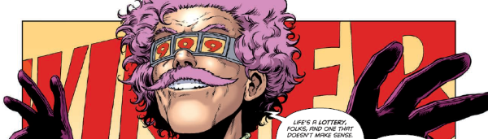

Variously titled as Tales From The Mega-City, Tales Of Mega-City One and Mega-City Stories, these started out as one-page vignettes (with the exception of Taxi Driver), but have more recently become longer one-parters.
Art by Jon Davis-Hunt & Gary Caldwell
| Story Title | Parts | Pages | w indicates a wraparound coverCovers | Year(s) | Issues | Writer | Artist | Colourist | Letterer |
|---|---|---|---|---|---|---|---|---|---|
| Wreckers | 1 | 1 | 0 | 1987 | Reprints: X22523 | John Wagner | Dave Elliot | [b&w] | Clive McGee |
| [Marital Disputes] | 1 | 1 | 0 | 1987 | Reprints: X22525 | John Wagner | Will Simpson | [b&w] | Clive McGee |
| Quarantine | 1 | 1 | 0 | 1987 | Reprints: X22526 | John Wagner | Colin MacNeil | [b&w] | Clive McGee |
| Taxi Driver | 2 | 14 | 0 | 1987 | 532-533 | Alan Grant | Paul Hardy | [b&w] | Steve Potter |
Or [Taxidermist].[Fire!] | 1 | 1 | 0 | 1987 | Reprints: X22534 | Alan Grant | Dave Wyatt | [b&w] | Jack Potter |
| [Father Time] | 1 | 1 | 0 | 1987 | 539 | John Wagner | Andrew Wildman | [b&w] | Tom Frame |
Supertitled: "Tales Of Mega‑City One".[My Favourite Laundrette] | 1 | 1 | 0 | 1988 | 605 | Alan Grant John Wagnervarious | Nik Williams | [b&w] | John Aldrich |
Supertitled: "Mega‑City Stories".Bazooka Bowl | 1 | 1 | 0 | 1993 | M2.41 | Robert McCallum | Robert McCallum | <-- | Robert McCallum |
No supertitle.Mega-City Massage | 1 | 1 | 0 | 1994 | M2.45 | Robert McCallum | Robert McCallum | <-- | Robert McCallum |
Supertitled: "Mega‑City Stories".Swagbag | 1 | 1 | 0 | 1995 | M3.12 | Robert McCallum | Robert McCallum | <-- | Robert McCallum |
Supertitled: "Tales From The Mega‑City".The Johnny Unit | 1 | 6 | 0 | 1997 | Reprints: M288 (supplement)M3.31 | John Wagner | Trevor Hairsine | <-- | Tom Frame |
Supertitled: "Tales From Mega‑City 1".But Is It Art? | 1 | 10 | 0 | 2012 | M331 | T.C. Eglington | Antonio Fuso | [b&w] | Ellie de Ville |
| The Irrational Lottery | 1 | 10 | 0 | 2014 | M347 | T.C. Eglington | Jon Davis-Hunt | Gary Caldwell | Simon Bowland |
Featuring Judge Pal.Two Tons of Trouble | 1 | 9 | 0 | 2014 | Reprints: M427 (supplement)M349 | David Baillie | Edin Coveney | [b&w] | Ellie de Ville |
| Wendell Says | 1 | 10 | 0 | 2014 | M354 | T.C. Eglington | Darren Douglas | <-- | Simon Bowland |
| Christmas Comes to Devil's Island | 1 | 10 | 0 | 2021 | 2262 | Karl Stock | James Newell | [greyscale] | Annie Parkhouse |
| >> Text Stories << | |||||||||
No supertitle.A Day in the Death of Citizen Egg | 1 | 8 | 0 | 1982 | JDA'83 | Alan Grant | Dave Gibbons | [b&w] | n/a |
No supertitle.I Was a Teenage Perp | 1 | 7 | 0 | 1982 | JDA'83 | Alan Grant | Brett Ewins | [b&w] | n/a |
Partly comic strip.Portrait of a Citizen Under Suspicion | 1 | 8 | 0 | 1983 | JDA'84 | unknown | Robin Smith | [b&w] | unknown |
No supertitle.Masquerade | 1 | 8 | 0 | 1991 | JDYB'92 | Dave Stone | Sean Phillips | [b&w] | n/a |
| Animal House | 1 | 8 | 0 | 1992 | SFS15 | John Smith | Chris Weston | [b&w] | n/a |
| >> Features << | |||||||||
Quiz.Mega-Speak | 1 | 1 | 0 | 1983 | JDA'84 | unknown | Reprint. Brian Bolland | [b&w] | n/a |
| A History of Mega-City One | 1 | 2 | 0 | 1983 | JDA'84 | John Wagner | Reprint.Mike McMahon | [b&w] | n/a |
| New York! New York? | 1 | 2 | 0 | 1983 | JDA'84 | unknown | unknown | [b&w] | unknown |
| year | episodes | pages |
| 1985 | 0 | 0 |
| 1986 | 0 | 0 |
| 1987 | 7 | 19 |
| 1988 | 1 | 1 |
| 1989 | 0 | 0 |
| 1990 | 0 | 0 |
| 1991 | 0 | 0 |
| 1992 | 0 | 0 |
| 1993 | 1 | 1 |
| 1994 | 1 | 1 |
| 1995 | 1 | 1 |
| 1996 | 0 | 0 |
| 1997 | 1 | 6 |
| 1998 | 0 | 0 |
| 1999 | 0 | 0 |
| 2000 | 0 | 0 |
| 2001 | 0 | 0 |
| 2002 | 0 | 0 |
| 2003 | 0 | 0 |
| 2004 | 0 | 0 |
| 2005 | 0 | 0 |
| 2006 | 0 | 0 |
| 2007 | 0 | 0 |
| 2008 | 0 | 0 |
| 2009 | 0 | 0 |
| 2010 | 0 | 0 |
| 2011 | 0 | 0 |
| 2012 | 1 | 10 |
| 2013 | 0 | 0 |
| 2014 | 3 | 29 |
| 2015 | 0 | 0 |
| 2016 | 0 | 0 |
| 2017 | 0 | 0 |
| 2018 | 0 | 0 |
| 2019 | 0 | 0 |
| 2020 | 0 | 0 |
| 2021 | 1 | 10 |
| 2022 | 0 | 0 |
Comic strip data (excludes other content):